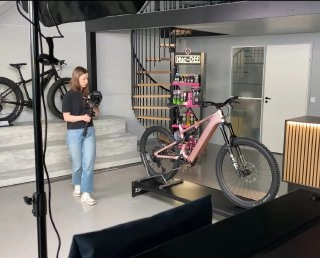

About
Valeri Tulchinskaia
is a videographer & visual storyteller who creates videos that help any brand tell its story — from bike shops to big factories. She focuses on capturing what makes each business unique, through warm, thoughtful, and beautiful visuals.
